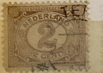
| SOURCE | TITLE| IMAGE MATCH | click to source page |
| www.ebay.com | Netherlands 2c Stamp - Early Issue (Used Hinged) X21 | eBay | 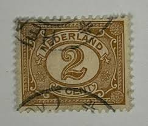 |
| www.ebay.com | NETHERLANDS STAMP #36a — YELLOW VARIETY - 1876 - UNUSED | eBay | 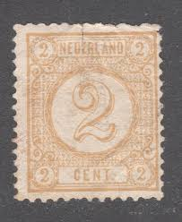 |
| www.shutterstock.com | Netherlands 1898 2 Cents Yellow-brown Postage Stock Photo ... | 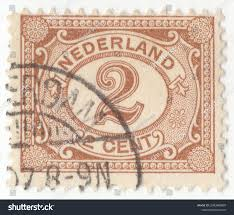 |
| www.ebay.com | Netherlands, Scott 59, Number Value, 1898-1924, used | eBay | 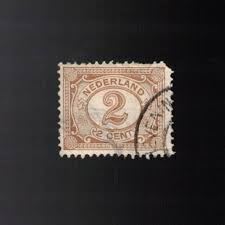 |
| www.hipstamp.com | Netherlands 1898 - Scott 55 used - 1/2c, Numeral | Europe ... | 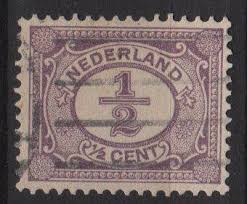 |
| www.alamy.com | NETHERLANDS - CIRCA 1923: a stamp printed in the Netherlands ... | 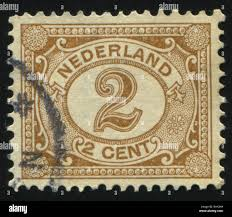 |
| www.shutterstock.com | December 6 2025 Jakarta Indonesia Postage Stock Photo ... | 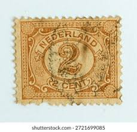 |
| www.stampedia.net | NETHERLANDS 1876 2 cent Definitive Stamps, | Numeral of Value | 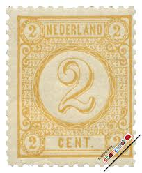 |
| in.pinterest.com | Figure 2 (1899) - Netherlands - LastDodo | 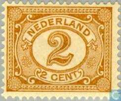 |
| www.allnumis.com | 2-1/2 Cent 1899, Numerals, Figures - Netherlands - Stamp - 9561 | 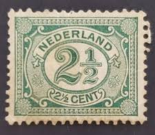 |
| www.hipstamp.com | Netherlands 55 Numeral 1/2 | Europe - Netherlands & Colonies ... | 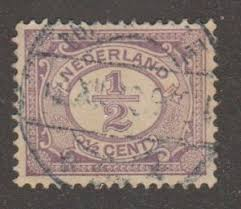 |
| www.dreamstime.com | NETHERLANDS - CIRCA 1899: Postal Stamp Printed in the ... | 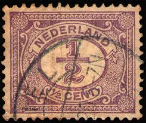 |
| www.ebay.com | Netherlands - 1899 New Daily Stamps | eBay | 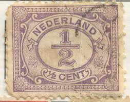 |
| www.jacestamps.com | Netherlands Stamps | 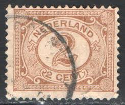 |
| www.stampcollectingblog.com | Dutch Armenwet (poors law) postage stamps | 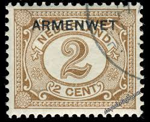 |
| www.leboncoin.fr | Timbre des Pays-Bas année 1899 - Collection | 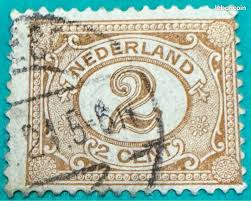 |
| www.gefuna.de | 2 Cent, Niederlande, Ziffer | GEFUNA | 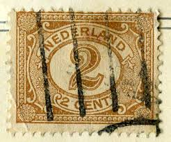 |
| www.stampedia.net | NETHERLANDS 1899 2 cent Definitive Stamps, | | 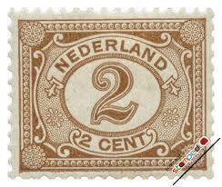 |
| www.reddit.com | Netherlands 🇳🇱 1/2 cent stamp. I tried to enhance postmark ... | 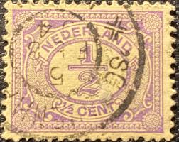 |
| www.cherrystoneauctions.com | U.S. & Worldwide Stamps & Postal History - May 7-8, 2019 ... | 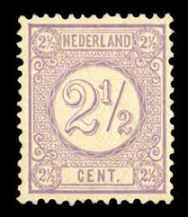 |
| www.alamy.com | Numeral 4 hi-res stock photography and images - Alamy | 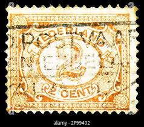 |
| www.armycom.cz | ZNÁMKA HOLANDSKO 1899-1935 2 cent HNĚDÁ | 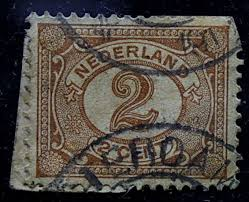 |
| www.zegelstekoop.nl | 054 Cijfer (x) | 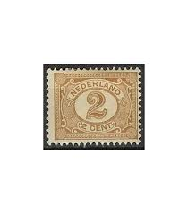 |
| stamps.sellosmundo.com | Netherlands. Netherlands Europe ref. 400 | 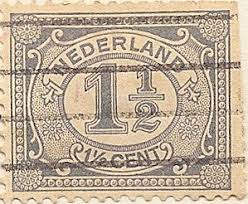 |
| www.etsy.com | Queen Wilhelmine: 1927 Dutch East Indies 7-1/2 Cent Violet ... | 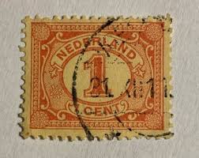 |
| www.todocoleccion.net | paises bajos. 1898. 2 centimos - Compra venta en todocoleccion | 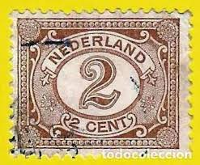 |
| www.ebay.com | Netherlands SC #36 Mint H 1872 | eBay | 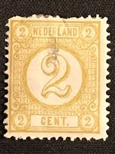 |
| www.istockphoto.com | 70+ Netherlands Postage Stamp Number Close Up Stock Photos ... | 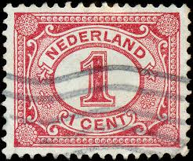 |
| www.facebook.com | Where to find used stamps for collectors in Japan? | 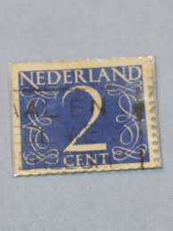 |
| esam.ir | هلند تمبرکلاسیک بی شارنیه | 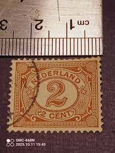 |
| www.lastdodo.com | Joseph Vürtheim [1808-1900] Stamp catalogue - LastDodo | 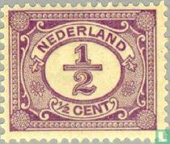 |
| aukro.cz | NL 1899 Mi 52 ine raz | Aukro | 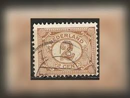 |
| www.duzikstamps.com | Netherlands & Colonies - Duzik Stamps | 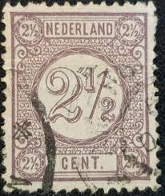 |
| www.mysticstamp.com | J1 - 1879 1c Postage Due, Brown - Mystic Stamp Company | 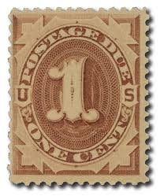 |
| bosstamps.nl | Nederland 54 cijfer 2 ct bruin BLOK van 4 MH/ongebr CV 26€ | 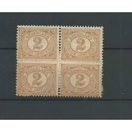 |
| 4stampsales.com | Netherlands - 1898 22 1/2c Queen Wilhelmina - VF MH - Scott #76 | 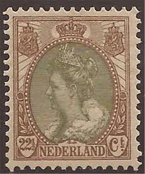 |
| www.kitantik.com | Efemera - +++ HOLLANDA KLASİK 3 - DAMGALI , HALİYLE ... | 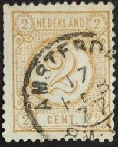 |
| www.cibafil.com | NETHERLANDS 1872-88 Effigy of King William III 12½ grey us | 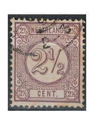 |
| www.etsy.com | 1899 Netherlands 5c Stamp: Queen Wilhelmina Fur Collar Issue ... | 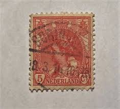 |
| www.puntstempels.nl | puntstempel 165 JOURE op nvph 32 E ; - Puntstempels | 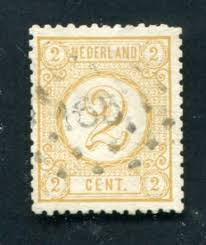 |
| www.facebook.com | 1918 Jenny invert sold for $460,800 at auction on 30 Oct. |  |
| picclick.co.uk | NETHERLANDS STAMPS - Numeral 2 Dutch cent 1946 Sg:NL 637 ... | 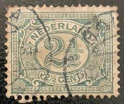 |
| www.alamy.com | Stamp netherlands postage value hi-res stock photography and ... | 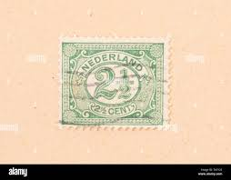 |
| findyourstampsvalue.com | netherlands stamps value | 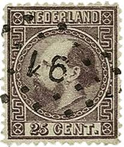 |
| www.dreamstime.com | Netherlands retro stamp editorial photo. Image of emblem ... | 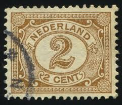 |
| www.osta.ee | 29-16 holland (216725892) - Osta.ee | 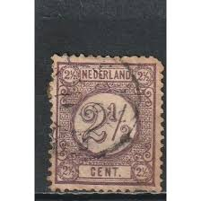 |
| www.nlpostzegel.nl | Dordrecht op NVPH 54 - laat gebruik grootrond | 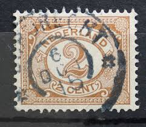 |
| huntingtonstampandcoinshop.com | HS&C Scott #J3 3 cent Postage Due. F LH Mint US Stamp ... | 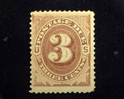 |
| www.mysticstamp.com | Worldwide - Europe - Netherlands & Colonies - Page 1 ... | 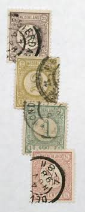 |
| www.shutterstock.com | Netherlands Circa 1946-1957 Postal Stamp Collection Stock ... | 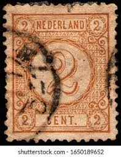 |
| www.allnumis.com | 1/2 Cent 1899, Numerals, Figures - Netherlands - Stamp - 9557 | |
| www.kitantik.com | HOLLANDA FİSKAL 1910 2.5C - DAMGALI - Efemera - kitantik ... | |
| stampencyclopedia.miraheze.org | Netherlands Indies - Stamp Encyclopedia | |
| deqistamps.com | Netherlands year 1898 Queen Wilhelmina 20c stamp issue | |
| en.todocoleccion.net | holanda - v/f 5 ct - personaje, 1533 - Buy Antique stamps of ... | |
| postalmuseum.si.edu | Special Rarities-Page Two | National Postal Museum | |
| www.reddit.com | What did I find in a pound of stamps? - a sample of 100 : r ... | |
| www.ebay.com | Foreign Netherlands 2c Stamp Used - #H465 | eBay | |
| en.wikipedia.org | Bullseye (philately) - Wikipedia | |
| www.youtube.com | Vintage & Rare New Zealand Postage Stamps - YouTube |